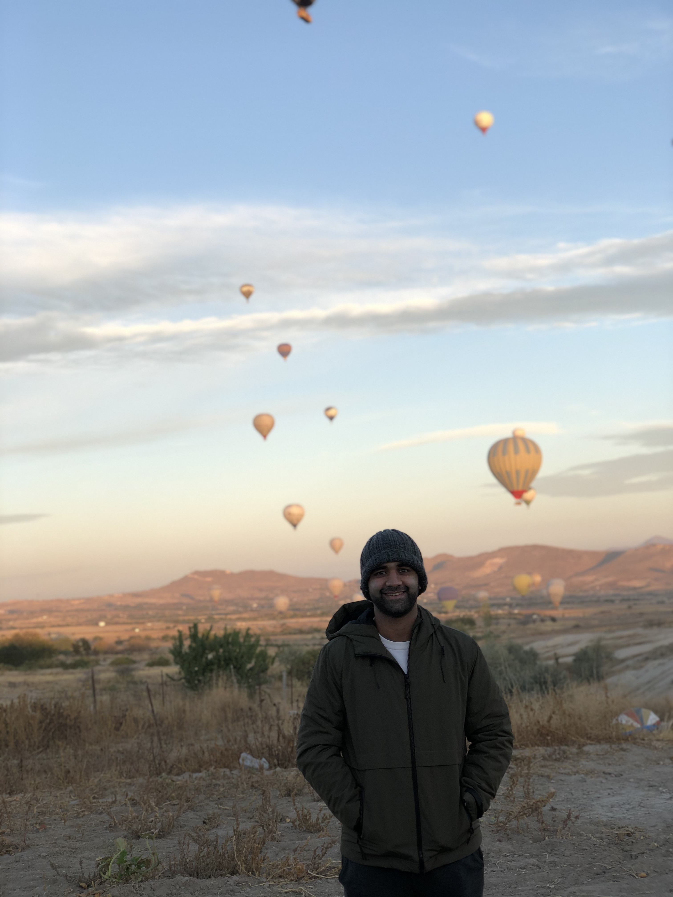

Saad Khan
Hi!
I'm Saad Khan. I grew up in Dubai, UAE, and moved to Virginia in 2015. I graduated from the University of Virginia in 2019 with a Bachelor’s of Science in
Computer Engineering. Currently, I am working as a Data Analyst at Voya Financial in New York City. I am also an associate at DataFrame,
primarily responsible for investment memos and deal flows.
My time at the University of Virginia was highlighted by my accomplishments as a student entrepreneur. I went into university hoping to become an electrical engineer, focused on solving the most sought-after problem of today: Making energy sustainable. However, after being immersed in the world of data, through classes and my student venture (TexMe), I found myself hooked by the premise of working with data. After changing my major to computer engineering, I began my journey exploring the world through the lens of data. Finding meaning where there is none and visualizing that transformation into meaningful insights is why I am in awe of Data Science. Being able to "predict", with a certain degree of accuracy, the outcome of a particular event is the excitement and, in my opinion, the pinnacle of technology in the 21st century.
Two of my favortie quotes that I try to live by everyday:
“I am afraid. Not of life, or death, or nothingness, but of wasting it as if I had never been.” - Flowers for Algernon
“I might not have the strength or technique of the other players, but I will always be the hardest worker on the pitch.” - Carles Puyol
Books I am reading in 2021: Steve Jobs, Zero to One, The Data Detective, What I Wish I Knew When I Was 20, The Big Short, How Innovation Works: And Why It Flourishes in Freedom, Inventing the Internet & The Euro Crisis and Its Aftermath.
Favorite podcasts: Towards Data Science, EconTalk, Mark and Carrie, Conan O'Brian Needs a Friend, HBR IdeaCast.